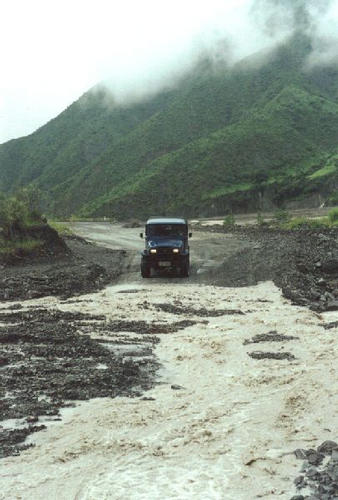
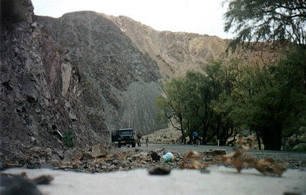
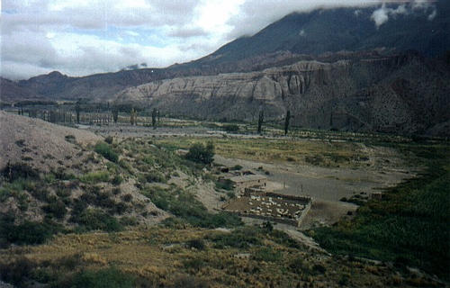
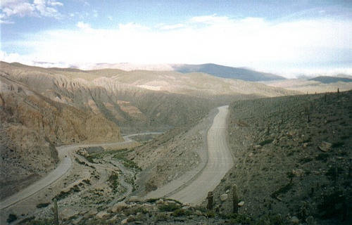
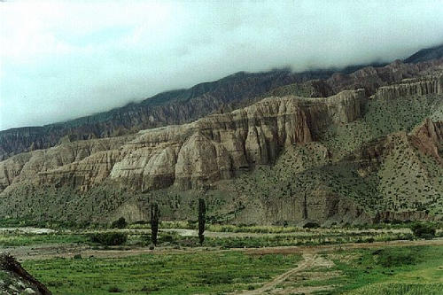
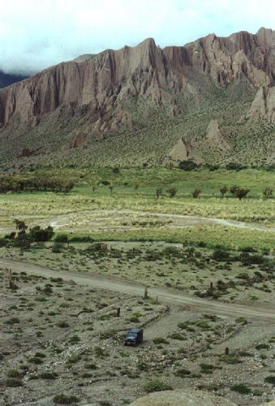

Após atravessar toda a chatice do chaco com sua planície interminável e que nunca muda, chegamos a Salta, a maior cidade do nortão argentino. E daqui adiante a paisagem muda radicalmente, finalmente começando a subir e dando os primeiros passos na escalada da cordilheira dos andes.
Nos dois anos de visita, a saída de Salta foi debaixo de chuva. Como a estrada de terra e pedras beira as montanhas e os córregos a atravessam, quando chove assim ela é simplesmente varrida pela água.

Saída sempre emocionante de Salta
Local: Estrada Salta/s.a.cobres - ARGENTINA - 2000
Pra atravessar uma situação dessas, ou se usa 4x4, ou faz igual os taxistas da região que já estão acostumados: pega embalo e passa acelerando no talo, com o carro chacoalhando, e torce pra que ele não pare no caminho. Passamos por cerca de 5 trechos onde a estrada estava inundada na saída de Salta.
Em curvas fechadíssimas em precipícios onde cabe exatamente dois carros lado a lado, não se pode ver o final e tem que buzinar para sinalizar que você está ali, é comum dar um encontrão com algum argentino maluco vindo no gás ou um caminhão cegonha carregado, sendo que ambos não tem o costume de buzinar para avisar de sua presença...

O carrinho e a montanha gigante
Local: Estrada Salta/s.a.cobres - ARGENTINA - 2000
Continuando o caminho, as montanhas começam a dar as caras, e são notadamente grandes.

Vale verde com fazenda
Local: Estrada Salta/s.a.cobres - ARGENTINA - 2000
Além das montanhas, uma paisagem comum em toda a extensão de deserto que se encontra nos andes: no meio do nada, um vale entre duas montanhas, por onde passa um riozinho, e com ele floresce a vida em volta, sendo o único local onde pode-se plantar algo naquela região.

Estrada de chão subindo a montanha
Local: Estrada Salta/s.a.cobres - ARGENTINA - 2000
Uma panorâmica da estrada que vai se segurando nas beiradas das montanhas. Uns cactos perdidos na paisagem montanhosa, e o tradicional riozinho no meio do vale. Ah! Pra você ter uma idéia da altura da montanha de onde essa foto foi tirada, aquele pontinho preto na estrada, à esquerda é um carro :)
Em 2001, este trecho da estrada já estava asfaltado, e os planos é de levarem o piche preto até Santo Antonio de Los Cobres. É bom para os locais, ruim para turistas como nós, onde a estrada de chão passa a sensação de solidão e aventura enquanto o asfalto faz notar a presença humana por lá...
Mas isso não abala a mágica do caminho, com montanhas coloridas, peladas e com erosão.

Montanhas com erosão
Local: Estrada Salta/s.a.cobres - ARGENTINA - 2001
É uma diferente da outra, uma novidade a cada curva. Os riscos horizontais são a memória das montanhas, indicando eras e dando pistas de sua formação (ou não).
Ainda estamos longe do deserto, que está do outro lado dos andes, mas o visual deste caminho é algo realmente especial, misturando um verde escasso, com pedras, areia, cactus, montanhas e Toyotas :)

Panorâmica da região
Local: Estrada Salta/s.a.cobres - ARGENTINA - 2001
Logo adiante está o destino imediato, a cidade de Santo Antonio de Los Cobres.